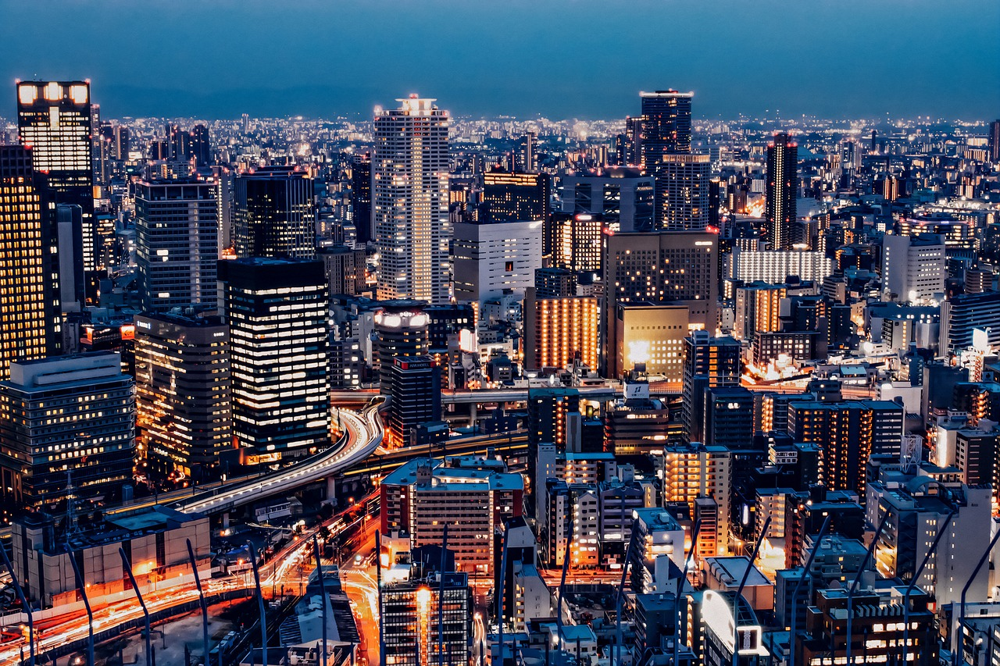

Discovering Japan: A Land of Tradition and Innovation

Japan, an archipelago in East Asia, is a country where ancient traditions harmoniously coexist with cutting-edge technology.
Known for its rich cultural heritage, Japan offers a unique blend of historical landmarks, natural beauty, and modern marvels.
Japan, an archipelago in East Asia, is a country where ancient traditions harmoniously coexist with cutting-edge technology.
Known for its rich cultural heritage, Japan offers a unique blend of historical landmarks, natural beauty, and modern marvels.
Japan's cities are a testament to its innovative spirit. Tokyo, the bustling capital, is a hub of technology, fashion, and cuisine.
From the towering skyscrapers of Shinjuku to the historic temples of Asakusa, Tokyo offers a diverse array of experiences.
The city is also famous for its efficient public transportation system, including the Shinkansen, or bullet trains, which symbolize Japan's advancements in engineering.
In contrast, Kyoto represents the traditional heart of Japan. Once the imperial capital, Kyoto is home to numerous UNESCO World Heritage sites,
including the serene Kinkaku-ji (Golden Pavilion) and the historic Fushimi Inari Shrine, known for its thousands of red torii gates.
The city's well-preserved temples, gardens, and geisha districts provide a glimpse into Japan's past.
Japan: A Land of Timeless Beauty and Innovation

Japan, an island nation in East Asia, is renowned for its unique blend of ancient traditions and modern advancements.
From the bustling streets of Tokyo to the serene temples of Kyoto, Japan offers a diverse array of experiences.
Tokyo, the capital city, is a hub of technology, fashion, and cuisine. It's famous for its skyscrapers, shopping districts, and efficient public transportation,
including the iconic Shinkansen bullet trains. In contrast, Kyoto, the former imperial capital, is known for its well-preserved temples, traditional tea houses, and beautiful gardens.
Mount Fuji, Japan's highest peak, is a symbol of natural beauty and cultural significance. It attracts climbers and tourists,
especially during the cherry blossom season when the landscape is adorned with pink sakura flowers.
Japanese cuisine, celebrated worldwide, emphasizes fresh, seasonal ingredients. Dishes like sushi, ramen,
and tempura are not only delicious but also reflect Japan's dedication to craftsmanship and detail.
Understanding Hiragana, Katakana, Kanji, and Romaji in Japan

Japan's writing system is unique and complex, comprising four main scripts: Hiragana, Katakana, Kanji, and Romaji.
Hiragana (ひらがな): This script is used primarily for native Japanese words and grammatical functions.
It consists of 46 basic characters, each representing a syllable. Hiragana is often the first script children learn in school.
Katakana (カタカナ): Katakana is used for foreign words, names, and onomatopoeia. Like Hiragana, it has 46 basic characters,
but the shapes are more angular and sharp. It's commonly seen in loanwords and technical terms.
Kanji (漢字): Kanji are logographic characters borrowed from Chinese. Each character represents a word or a meaningful part of a word.
There are thousands of Kanji, but daily use typically involves around 2,000 characters. Kanji adds depth and nuance to the language,
often conveying complex meanings.
Romaji (ローマ字): Romaji is the Romanization of Japanese sounds using the Latin alphabet.
It's used primarily for the benefit of non-Japanese speakers, in language learning, and for certain brand names and signage.
Together, these scripts form a rich and versatile writing system that reflects Japan's history and cultural evolution.